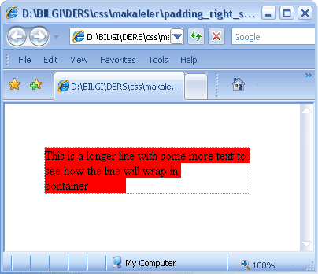
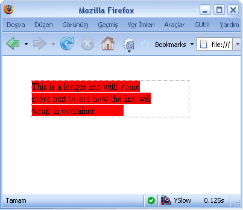

Şimdiye kadar hep Internet Explorer ile ilgili sorunlara değindim. Şimdi ise size en çok sevdiğim tarayıcı Firefox'un küçük bir sorununu aktarmaya çalışacağım. Amaç sorunu bilip ona göre kod yazmak.
Birden fazla satır içeren satıriçi(inline) elemanlara padding-right değeri atandığında, satıriçi elemanın sonuna padding-right değeri eklenir. Firefox 2 ve alt sürümlerinde pading-right değeri uygulandığı satıriçi elemanın tümüne uygulanacaktır. Bu problem Padding-left'de yoktur.
<!DOCTYPE html PUBLIC "-//W3C//DTD XHTML
1.0 Transitional//EN" "http://www.w3.org/TR/xhtml1/DTD/xhtml1-transitional.dtd">
This is a longer line with some
more text to see how the line will wrap in container
Örnek sayfayı görmak için tıklayınız.

Internet Explorer 7(sorunusuz)

Firefox (sorunlu)
Ben hala Firefox'u çok seviyorum :D
Yorumlar !